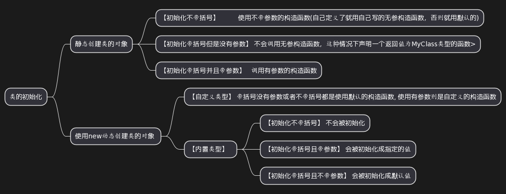

1. 构造函数需要初始化列表的情况
* 类成员变量是引用类型的
* 类成员变量为非静态的常量,也就是只被const修饰的
* 类中没有默认构造函数的,此时类对象作为其他类的成员变量,如下
class A {
int i;
public:
A(int );
};
A::A(int arg) { i = arg; }
class B {
A a;
public:
B(int );
};
B::B(int x):a(x) { } //必须使用初始化列表
2. 创建类对象时,使用构造函数后面带不带括号的区别

静态创建类对象，就不区分内置类还是自定义类了，结果一样。动态创建类对象需要区分内置类和自定义类。
#include <iostream>
#include <string>
using namespace std;
class MyClass{
public:
MyClass(){
std::cout << "Hello MyClass!" << std::endl;
num = 100;
}
MyClass(int i) :num(i){
std::cout << "Hello MyClass!------int" << std::endl;
}
void MyMethod(){
std::cout << "输出成员num: " << num << std::endl;
}
private:
int num;
};
int main()
{
cout << "静态创建自定义类对象" << endl;
cout << "========MyClass c1=========" << endl;
MyClass c1;//表示使用不带参数的构造函数，或者用默认参数值的构造函数。
c1.MyMethod();
cout << "========MyClass c2()========" << endl;
MyClass c2();//不会调用无参构造函数,这种情况下该处是声明一个返回值为MyClass类型的函数而已
//c2.MyMethod(); 调用函数会报错误
cout << "=======MyClass c3(1)=========" << endl;
MyClass c3(1);//调用有参数的构造函数,此时参数为int的构造函数
c3.MyMethod();
cout << "静态创建内置类对象" << endl;
cout << "========string s1=========" << endl;
string s1;
cout << "s1=" << s1.size()<<" s1=" << s1 << endl;
cout << "========string s2=========" << endl;
string s2();
//cout << "s2=" << s2.size()<<" s2=" << s2 << endl;
cout << "========string s3=========" << endl;
string s3("aaa");
cout << "s3=" << s3.size() << " s3=" << s3 << endl;
cout << "*****************************************************************************" << endl;
cout << "动态创建自定义类对象" << endl;
cout << "========new MyClass()=========" << endl;
MyClass *c4 = new MyClass();
c4->MyMethod();
cout << "========new MyClass(1)=========" << endl;
MyClass *c5 = new MyClass(1);
c5->MyMethod();
cout << "========new MyClass=========" << endl;
MyClass *c6 = new MyClass;
c6->MyMethod();
cout << "动态创建内置类对象" << endl;
cout << "========new int(1)=========" << endl;
int *pint1 = new int(1); //会被初始化为1
cout << "*pint1 = " << *pint1 << endl;
cout << "========new int()=========" << endl;
int *pint2 = new int(); //会被初始化为0
cout << "*pint2 = "<< *pint2 << endl;
cout << "========new int=========" << endl;
int *pint3 = new int; //不会被初始化为0
cout << "*pint3 = " << *pint3 << endl;
return 0;
}
/*
静态创建自定义类对象
========MyClass c1=========
Hello MyClass!
输出成员num: 100
========MyClass c2()========
=======MyClass c3(1)=========
Hello MyClass!------int
输出成员num: 1
静态创建内置类对象
========string s1=========
s1=0 s1=
========string s2=========
========string s3=========
s3=3 s3=aaa
*****************************************************************************
动态创建自定义类对象
========new MyClass()=========
Hello MyClass!
输出成员num: 100
========new MyClass(1)=========
Hello MyClass!------int
输出成员num: 1
========new MyClass=========
Hello MyClass!
输出成员num: 100
动态创建内置类对象
========new int(1)=========
*pint1 = 1
========new int()=========
*pint2 = 0
========new int=========
*pint3 = 0
*/